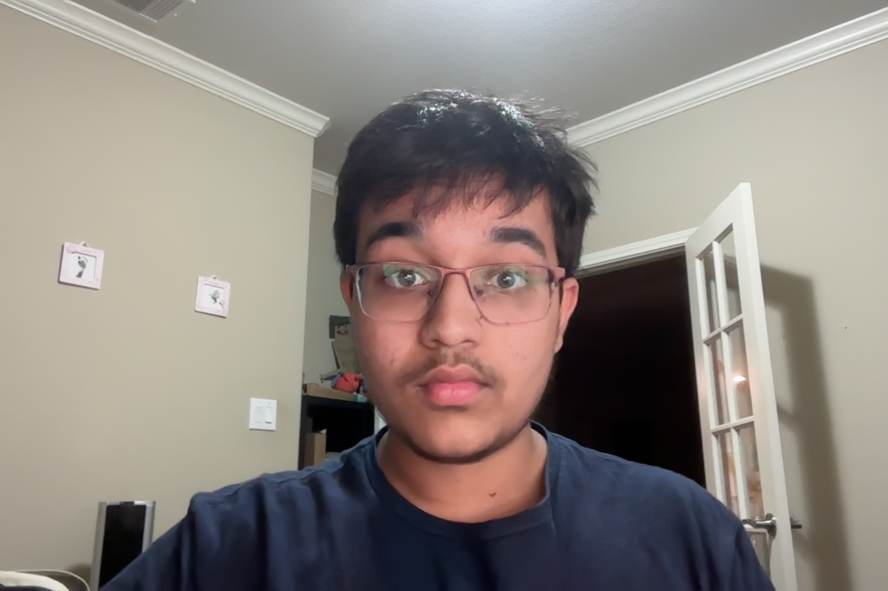
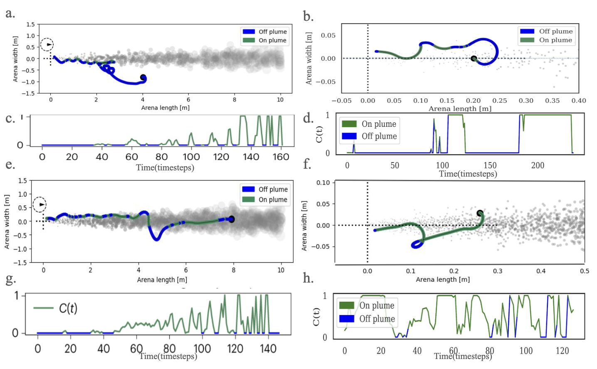

|
Aarav Sinha Hi, I'm Aarav. I'm highly interested in how the brain works, how we can replicate its mechanisms through computation, and the insights into neuroscience we can glean from this replication. I'm currently a research intern at Johns Hopkins University studying predictive grid cells through computational simulations, and a computational neuroscience intern at Eon Systems PBC working on embodied Drosophila brain models. Previously, I was a summer researcher at Harvard University training RNN agents for odor plume tracking, and a student research assistant at the UC Davis Center for Neuroscience. I'm a sophomore at Tompkins High School in Katy, Texas, where I'm ranked 5th out of 800+ students with a 4.0 GPA. I'm also a USACO Gold competitor, a Science Olympiad state medalist, and the founder of my school's AI Club and Engineering Club. |
 |
{kind=link}
ResearchI'm interested in computational neuroscience, connectomics, embodied neural models, and deep reinforcement learning. My work focuses on understanding how biological neural circuits give rise to behavior, using both data-driven simulations and biologically inspired AI agents. |
|
 |
Using Deep Reinforcement Learning to Understand Odor Plume Tracking in Walking and Flying Insects
Satpreet H. Singh, Aarav Sinha NeurIPS AI for Science Workshop, 2025 We use deep RL to train biologically inspired RNN agents to navigate to odor sources, comparing walking and flying modes. Walking agents develop fine-scale orientation strategies and compact neural representations, while flying agents use broad sweeping turns with higher-dimensional dynamics. |

|
Towards Embodied Brain Emulations: A Drosophila Connectome-Constrained Brain Model Accurately Predicts Neural Activity and Controls Behavior in a Virtual Environment
Scott Harris, Aarav Sinha, Susanna Yaeger-Weiss, Vincent Louvel, Philip Shiu Society for Neuroscience (SfN), 2025 — Poster A connectome-constrained Drosophila brain model that accurately predicts neural activity and controls behavior in a virtual environment. I contributed to the brain embodiment component of the project at Eon Systems. |
Experience |
| Sep 2025 – Present |
Research Intern — The Johns Hopkins University
Studying the function of predictive grid cells through computationally simulating the MEC neuron subpopulation. |
| Jul 2025 – Present |
Computational Neuroscience Intern — Eon Systems PBC
Researching controlling embodied Drosophila models with connectome-constrained neural networks. Designing dynamic environments and training models to exhibit biologically accurate behavior. Presented poster at SfN as 2nd author. |
| Jun 2025 – Aug 2025 |
Summer Researcher — Harvard University
Trained recurrent neural network (RNN) agents to navigate a simulated environment and locate multiple odor plume sources using reinforcement learning. Work presented at NeurIPS 2025. |
| May 2025 – Oct 2025 |
Student Research Assistant — UC Davis Center for Neuroscience
Assisted in a computational neuroscience project examining how dopamine modulates cognitive flexibility in tasks involving selective working memory and reward-based decision-making. |
Awards & Activities
|
|
Template from Jon Barron. |